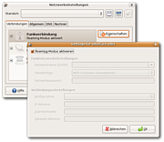
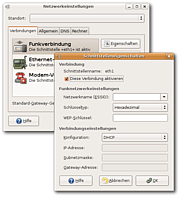
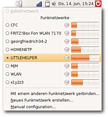
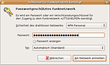
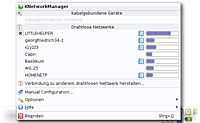
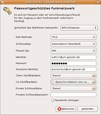
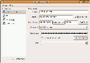

Bis Hardy
Archivierte Anleitung
Dieser Artikel wurde archiviert, da er - oder Teile daraus - nur noch unter einer älteren Ubuntu-Version nutzbar ist. Diese Anleitung wird vom Wiki-Team weder auf Richtigkeit überprüft noch anderweitig gepflegt. Zusätzlich wurde der Artikel für weitere Änderungen gesperrt.
Dieser Artikel wurde für die folgenden Ubuntu-Versionen getestet:
Hinweis:
Ab 8.10 Intrepid Ibex wird der komplett überarbeitete Network-Manager in der Version 0.7 eingesetzt. Die entsprechenden Informationen findet man im Artikel NetworkManager
Zum Verständnis dieses Artikels sind folgende Seiten hilfreich:
Experten-Info:
Die im Artikel vorgestellte Version des NetworkManager kann nur über DHCP die IP der WLAN-Netzwerkkarte beziehen. Die Vergabe einer statischen IP-Adresse an ein per Netzwerk-Manager gesteuertes WLAN-Gerät ist leider nicht möglich.
Der NetworkManager  ist ein System zum einfachen Verwalten von WLAN- sowie LAN-Netzwerkverbindungen. Die aktuelle Version beherrscht den Umgang mit allen gängigen Verschlüsselungsarten wie WEP, WPA und WPA2.
ist ein System zum einfachen Verwalten von WLAN- sowie LAN-Netzwerkverbindungen. Die aktuelle Version beherrscht den Umgang mit allen gängigen Verschlüsselungsarten wie WEP, WPA und WPA2.
Das Ziel des NetworkManagers ist laut Homepage "Pain Free Networking". Besonders im Bereich des WLANs hat sich in der Vergangenheit viel getan. Benutzer, die viel mit WLAN arbeiten, sollten darauf achten die neuste Ubuntu-Version einzusetzen.
Allerdings funktioniert der NetworkManager nicht mit allen WLAN-Karten. Eine Liste der unterstützten Karten und Treiber kann man hier einsehen. Ebenso sollte man beachten, dass manche WLAN-Karten eingeschränkte Treiber benötigen, die eventuell erst aktiviert werden müssen.
Installation¶
In aktuellen Ubuntu Versionen ist der NetworkManager in der Standardinstallation enthalten. Sollte dies nicht der Fall sein oder muss der NetworkManager neu installiert werden, so läuft die Installation genau so wie für Ubuntu Dapper beschrieben.
Grundkonfiguration¶
Damit der Netzwerk-Manager die Netzwerkschnittstellen verwalten kann, müssen diese für die herkömmliche Netzwerkverwaltung deaktiviert sein bzw. so konfiguriert sein, dass sie ihre IP über DHCP beziehen. Ansonsten erscheint beim Klick auf das Symbol des NetworkManagers nur die Meldung "Keine Netzwerkgeräte gefunden!". Richtet man den NetworkManager ein, bevor man selber die Netzwerkeinstellungen des Systems geändert hat, so passen diese üblicherweise. Informationen hierzu findet man im Wiki unter IP-Adresse wechseln.

GNOME / Xfce¶
Ab Ubuntu Feisty Fawn 7.04¶
Im Network Manager gibt es einen sogenannten "Roaming-Modus". Dieser entspricht der richtigen Konfiguration für den NetworkManager. Alle Netzwerkgeräte, die sich im Roaming-Modus befinden, können vom NetworkManager verwaltet werden. In den Eigenschaften eines jeden Netzwerkgerätes kann man den Roaming-Modus aktivieren bzw. deaktivieren.
Bis Ubuntu Edgy Eft 6.10¶

Bis Edgy Eft muss man darauf achten, dass der NetworkManager nur mit Netzwerkkarten arbeiten kann, die entweder deaktiviert sind oder die so konfiguriert wurden, dass sie ihre IP per DHCP beziehen.
KDE¶
Kubuntu Feisty Fawn 7.04 kennt den oben geschilderten Roaming-Modus von Ubuntu Feisty Fawn noch nicht. Hier muss man wieder einstellen, dass die Netzwerkkarten per DHCP ihre IP beziehen oder deaktiviert sind.
Terminal¶
Alternativ kann man die Netzwerkgeräte auch in der /etc/network/interfaces manipulieren [4]. Wie bereits gesagt ist es hier wichtig, dass die über den NetworkManager zu verwaltenden Geräte über DHCP konfiguriert werden, also Einträge wie
auto eth0 iface eth0 inet dhcp
besitzen oder auch komplett auskommentiert
# auto eth0 # iface eth0 inet dhcp
bzw. gelöscht sind. Weitere Informationen zu dieser Datei findet man im Wiki unter interfaces.
Verbindung herstellen¶

Beim nächsten Systemstart ist das Programm automatisch aktiv. Im Systembereich der Kontrollleiste erscheint ein Symbol vom NetworkManager in Form eines Stecker-Symbols bei einer herkömmlichen an ein Kabel gebundenen Karte bzw. bei einer WLAN-Karte einer Anzeige, die sich je nach Signalqualität ändert.
Befindet man sich in der Nähe eines Access Points oder Hotspots, so erkennt der NetworkManager diesen automatisch. Ein Klick auf das Symbol im Systembereich in der Statusleiste zeigt die erkannten Netzwerke und bietet die Möglichkeit, sich mit einem vorhandenen Netzwerk zu verbinden oder die Daten eines anderen Netzwerkes einzugeben.

Wenn das gewünschte Netzwerk schon angezeigt wird (ein Symbol bedeutet, dass das Netzwerk verschlüsselt ist und Balken zeigen die Verbindungsqualität an), reicht ein Klick auf dieses, um einen Verbindungsversuch zu starten. Das System wird gegebenenfalls nach einem Passwort/WLAN-Schlüssel fragen.

Schlägt dieser fehl, obwohl das Passwort korrekt eingegeben wurde, so kann es nicht schaden zu Testzwecken ein Passwort ohne Sonderzeichen oder Umlaute zu verwenden (siehe Problemlösungen weiter unten). Bei einer hergestellten Verbindung erscheinen vier Balken, je nach Verbindungsqualität blau eingefärbt.
VPN Verbindung¶
Man kann mit einem NetworkManager#Dispatcher-Skript die Verbindung zu Virtuellen Privaten Netzwerken herstellen. Seit Feisty gibt es in den Paketquellen Erweiterungen um dies über die grafischen Oberfläche des NetworkManagers zu tun: Network-Manager/VPN Plugins.
WPA Enterprise mit TTLS und PAP¶

Seit Ubuntu "Hardy Heron" 8.04 wird WPA Enterprise mit TTLS und PAP (und ggf. Zertifikatsdatei) unterstützt. Anwender der Vorgängerversionen sollten auf den Einsatz des NetworkManagers verzichten und wpa_supplicant nutzen. Der nebenstehende Dialog illustriert die vorzunehemenden Einstellungen für Eduroam-Teilnehmer (Studenten und Mitarbeiter in Europa und Ozeanien).
Gespeicherte Verbindungen bearbeiten¶

Seit Ubuntu "Hardy Heron" 8.04 gibt es die Möglichkeit die bereits konfigurierten Netzwerke zu bearbeiten bzw. auch zu löschen, so dass sich der NetworkManager nicht mehr automatisch zu diesen verbindet.
Der Dialog ist über einen Rechtsklick auf das Symbol des NetworkManager im Benachrichtigungsfeld des GNOME Panels und dem Eintrag "Edit Wireless Networks..." im Kontextmenü zu erreichen. Dort kann man die einzelnen gespeicherten Netwerke auswählen, die Zugangsdaten einsehen und die Daten bei Bedarf löschen.
Tipps¶
GNOME-Schlüsselbund automatisch aufsperren¶
Die Zugangsdaten speichert der GNOME-NetworkManager nicht selber ab, sondern benutzt den GNOME-Schlüsselbund. Dieser speichert Passwörter verschlüsselt und sicher ab. Allerdings muss dieser beim ersten Zugriff eines Programmes aufgesperrt werden. Ab Ubuntu Feisty Fawn 7.04 kann man den Schlüsselbund automatisch beim Einloggen in GNOME aufsperren lassen. Informationen hierzu findet man im Wiki unter GNOME Schlüsselbund.
KDE-Brieftasche automatisch aufsperren¶
Der Knetworkmanager bietet zwei Möglichkeiten Zugangsdaten zu verwalten:
KDE Brieftasche¶
Hierbei speichert KNetworkManager die Zugangsdaten nicht selber ab, sondern benutzt dafür die KDE-Brieftasche, bei der man ebenso beim ersten Öffnen das gesetzte Passwort eingeben muss. Um dies zu unterbinden bleibt nur die Möglichkeit kein Passwort zu setzen (d.h. bei der Festlegung des Passwortes die Passwortfelder einfach leer zu lassen), allerdings kann man dann auf die darin gespeicherten Passwörter eventuell zugreifen. Dies stellt ein Sicherheitsrisiko dar, man muss sich also zwischen Sicherheit und Bequemlichkeit entscheiden.
Speicherung in Konfigurationsdatei¶
Hierbei speichert Knetworkmanager das Passwort in der Datei ~/.kde/share/config/knetmorkmanagerrc im Klartext ab. Dies stellt ebenfalls ein Sicherheitsrisiko da, da jeder mit Zugang zum Rechner diese Datei und damit das Passwort auslesen kann. Vorteil dieser Variante ist, das sich das Programm automatisch ohne Eingabe eines Passworts zum Netz verbindet (ab Hardy Heron). Dazu muss man aber mindestens einmal zu diesem Netz verbunden gewesen sein (siehe "Vertrauenswürdige Netze" im Optionsmenü des Knetworkmanagers) und ggf. ein Passwort eingegeben haben.
Bestimmte Netzwerke verbieten¶
Aktuell kann man im Netzwerk-Manager leider kein Netzwerk definieren, in das sich der Manager bevorzugt einbuchen soll. Der Netzwerk Manager überprüft die SSIDs in der Umgebung und verbindet sich automatisch zu dem stärksten Signal zu dem man schon einmal eine Verbindung aufgebaut hatte. So kann es vorkommen, dass das ungeschützte Netzwerk des Nachbarn, das man nur mal kurz testen wollte, bei jedem Start genutzt wird. Über den Befehl [3]
gconftool-2 --recursive-unset /system/networking/wireless/networks/<SSID>
kann man die gespeicherten Informationen über einzelne SSIDs löschen und so erreichen, dass das Funknetzwerk in Zukunft wieder ignoriert wird. Für <SSID> muss dann der Name des Netzwerkes stehen, das entfernt werden soll. Leerzeichen darin müssen durch @32@ ersetzt werden. Mit dem Konfigurationseditor kann man sehen, welche Einträge vorhanden sind.
Problemlösungen¶
Instabile Verbindung¶
Wenn die Verbindung ohne nachvollziehbare Gründe mal klappt und mal nicht, sollte zu Testzwecken ein Passwort ohne Umlaute oder Sonderzeichen verwandt werden. Diese hatten auch schon in einer Ausgabe der Distribution von SuSE zu Problemen geführt.
Konflikte mit anderen Netzwerkmanagern¶
Wenn der NetworkManager trotz korrekter Bearbeitung der Datei /etc/network/interfaces und trotz der Nutzung von DHCP keine Verbindung herstellen will, sollten die auf dem System installierten Pakete noch einmal auf störende Programme wie wifi-radar oder den Funknetzassistenten zur WLAN-Verwaltung untersucht werden.
Automatisieren per Skript¶
Der NetworkManager kann mehr als nur eine Verbindung auf- und wieder abbauen. Der NetworkManager kann bei Verbindungsauf- und Abbau Skripte ausführen. Diese Funktionen sind jedoch nicht von der grafischen Oberfläche aus erreichbar. Dies macht der NetworkManager über die sogenannten Dispatcher-Skripte, die ausgeführt werden, wenn der NetworkManager eine Aktion durchführt, z.B. wenn er sich zu einem WLAN verbindet oder davon trennt. (mehr)

- Erstellt mit Inyoka
-
 2004 – 2017 ubuntuusers.de • Einige Rechte vorbehalten
2004 – 2017 ubuntuusers.de • Einige Rechte vorbehalten
Lizenz • Kontakt • Datenschutz • Impressum • Serverstatus -
Serverhousing gespendet von